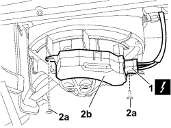

5040C44 FAN MOTOR ELECTRONIC VARIATOR - R+R
- Path
- Procedures > 50 AUXILIARY UNITS > 5040 AIR CONDITIONING CASING AND COMPONENTS > 5040C AIR CONDITIONING CASING AND COMPONENTS > 5040C44 FAN MOTOR ELECTRONIC VARIATOR - R+R
- Kind
- repair procedure (removal / refitting; the operation number is the code)
- Applies to
- all engines; all production periods
- Interactive page
- https://sloeber94.github.io/elrnDB-fCrm/en/#/194000620
Applies to: all engines; all production periods
 Removing
Removing
 Refitting
Refitting- Turn the ignition key to the OFF position.
- Disconnect the negative battery terminal.
Description | Connector | |
|---|---|---|
BATTERY |
Op. 5010C55 LOWER AIR DIFFUSER (ONE) LH OR RH - R.R
1. Working under the right side of the dashboard trim, disconnect the electrical connection.
Description | Connector | |
|---|---|---|
1 | PASSENGER COMPARTMENT AIR FAN |
2. Undo the fixing bolts (2a) and remove the electronic transformer (2b) from the fan assembly.

Applies to: all engines; all production periods
Refitting
Removing- Check that the electronic transformer for the fan motor is not blocked; if it is, replace it with a new one.
- Place the electronic transformer in position and tighten the fixing bolts.
- Connect the electrical connection.
Description | Connector | |
|---|---|---|
PASSENGER COMPARTMENT AIR FAN |
Op. 5010C55 LOWER AIR DIFFUSER (ONE) LH OR RH - R.R
- Connect the negative battery terminal.
Description | Connector | |
|---|---|---|
BATTERY |
- Check that the fan is working properly at the different speeds.